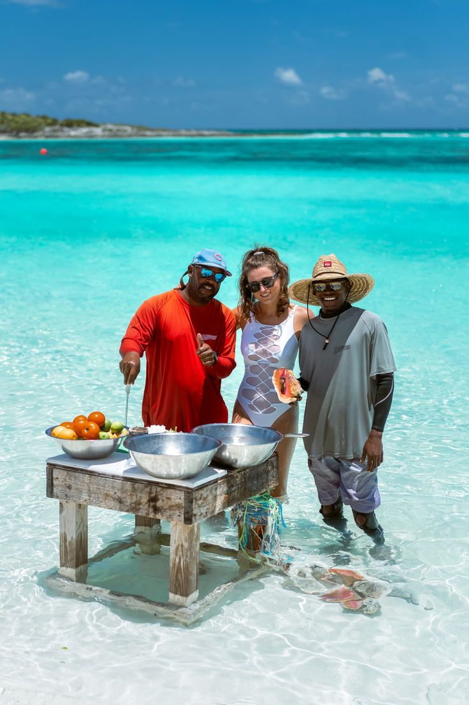

The destination
Big Major Cay
Discover the natural charm of Big Major Cay, where a sweeping shoreline meets the luminous blues of the Exuma sea. The island’s quiet beauty, soft coastal sands and open seascapes offer a striking introduction to this celebrated corner of the Bahamas. Take a moment to appreciate the scenery and the peaceful rhythm of life among the cays.